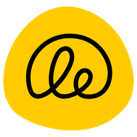

I have tried making my own things. So far my attemps at making a business has failed. But I will
continue
building and I believe some day things will work out fine ;)
Open Source and Contract Work
November 2017 — March 2024
I remember when I first contributed to open source, I felt a sense of pride that the code I write can
make some impact.
Open source led me to GSoC and to a well-paid contract work.
During these years, I learnt to code with Harvard's online programming courses —
CS50 and CS50 Web. In my opinion, they are the best way to learn to
code :)

Learning Equality
Jun 2021 — Mar 2024 • 2 years 9 months
I started at Learning Equality as a Google Summer of Code (GSoC) Student Developer. After
GSoC,
I worked as a part-time developer on contract basis.
freeCodeCamp
Nov 2017 — Aug 2020 • 2 years 9 months
I helped the freeCodeCamp team with manual testing their beta application, contributed to
the
curriculum and improved their web app a little bit with my small CSS pull requests.
.svg)